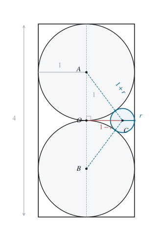
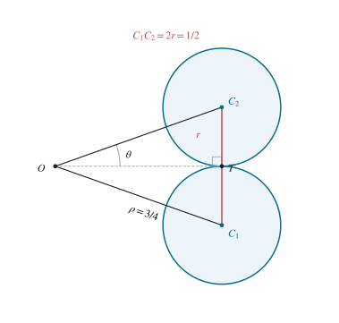
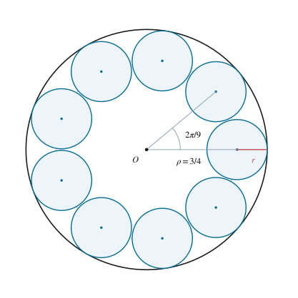

2.1 确定两个铁球的位置
以圆柱中心为原点 O，轴线为 z 轴，容器内部由 x2+y2≤1、−2≤z≤2 描述。半径为 1 的铁球若球心到轴线的距离为 ρ，其最外侧点到轴线的距离为 ρ+1；要留在圆柱内，就必须 ρ+1≤1，即 ρ=0。所以两个铁球的球心都在轴线上。
同时，球心高度均在 [−1,1] 中。两个铁球不相交要求球心距至少为 2，而该区间中两点的最大距离恰为 2，故两球心只能位于区间两端。记：
A=(0,0,1),B=(0,0,−1). （1）2.2 确定小球球心所在平面
设小铜球半径为 r>0，球心为 C=(x,y,z)，记 ρ=x2+y2。它与两个铁球外切，因此 AC=BC=1+r。两距离的平方分别为：
ρ2+(z−1)2ρ2+(z+1)2=(1+r)2,=(1+r)2. （2）两式相减时，ρ2 与右侧相同的 (1+r)2 均消去，而 (z−1)2−(z+1)2=(z2−2z+1)−(z2+2z+1)=−4z，因此 z=0。几何上，这是因为到 A,B 等距的点位于线段 AB 的垂直平分面。代回任一距离等式，得到：
ρ2+1=(1+r)2. （3）2.3 排除与端面相切并求半径
小球留在圆柱内要求 ρ+r≤1，所以 r≤1。球心已在 z=0 平面，到上下端面的距离均为 2。若与某端面相切就须 r=2，与 r≤1 矛盾。因此小球与容器内表面的相切只能发生在侧面，故 ρ+r=1。
将 ρ=1−r 代入式（3），左侧展开为 1+(1−2r+r2)=2−2r+r2，右侧展开为 1+2r+r2。消去相同的 r2 并移项，得到：
1+(1−r)2=(1+r)2⟹1=4r. （4）r=41,ρ=43. （5）因此所有可用的小球都被迫具有半径 1/4，球心位于中截面内半径为 3/4 的同一圆周上。

图 1. 过轴线与一个小球球心的截面。各圆均为相应球体的大圆，三处相切及长度按同一比例绘制。
2.4 将不相交条件化成圆心角约束
两个小球的内部不相交，当且仅当两球心距离至少为 2r=1/2。在半径 ρ=3/4 的圆上，两球心对应的较小圆心角为 α∈[0,π]；把等腰三角形沿角平分线分成两个直角三角形，可得弦长 2ρsin(α/2)。因此：
2ρsin2αsin2α≥2r,≥ρr=31. （6）记 θ=arcsin(1/3)，其中 0<θ<π/6。正弦在 [0,π/2] 上严格递增，所以较小圆心角必须满足 α≥2θ。

图 2. 两个相切的小球：中心距为 2r，半圆心角 θ 满足 sinθ=r/ρ=1/3。
2.5 给出任意放置的个数上界
若有 n≥2 个小球，将球心按圆周方向排序，记相邻球心间沿该方向的圆心角间隔为 δ1,…,δn，其和为 2π。相邻两点的较小圆心角为 min(δj,2π−δj)，由不相交条件，它至少为 2θ，因而每个 δj 也至少为 2θ。相加得：
2π=j=1∑nδj≥2nθ,n≤θπ. （7）角间隔的和为一周，是因为最后一个间隔从末点回到首点，正好补齐了圆周。当某个间隔超过 π 时，也仍然可以使用它对应的较小角来得到 δj≥2θ，所以这个上界覆盖了集中在部分圆弧上的放置。下面分别证明 θ>π/10 与 θ<π/9，前者排除十球，后者保证九球可行。
2.6 证明 θ 大于 π/10：排除十个球
先计算 s=sin(π/10)。令 β=π/10，则 3β=π/2−2β，从而 sin3β=cos2β。三倍角公式来自 sin(2β+β)=2sinβcos2β+(1−2sin2β)sinβ=3s−4s3；二倍角公式给出 cos2β=1−2s2。两者相等后，移项并分解 4s3−2s2−3s+1=(s−1)(4s2+2s−1)，即：
3s−4s3(s−1)(4s2+2s−1)=1−2s2,=0. （8）因为 0<s<1，排除 s=1，解二次方程并取正根得：
sin10π=45−1<31=sinθ. （9）其中严格不等式等价于 35<7，两边均为正，平方后就是 45<49。由正弦在此区间严格递增，得 θ>π/10，从而 n≤π/θ<10。因 n 为整数，必有 n≤9。
2.7 证明 θ 小于 π/9：构造九个球
由于 0<θ<π/6，有 0<3θ<π/2。再次用三倍角公式：
sin3θ=3⋅31−4(31)3=2723<23=sin3π. （10）严格不等式可通过平方验证：3/4−(23/27)2=71/2916>0。由正弦在 (0,π/2) 严格递增，得 3θ<π/3，即 θ<π/9。
现在可明确取九个球心 Cj=(43cos(2πj/9),43sin(2πj/9),0)，其中 j=0,…,8。两个不同球心的较小圆心角只能为 2πk/9，其中 k=1,2,3,4。其一半 πk/9 均在 (0,π/2) 内，而弦长 2ρsin(πk/9) 随 k 严格增加，所以最小距离由 k=1 的相邻球心取得。这个距离满足：
2ρsin9π>2ρsinθ=2r=21. （11）所以九个小球两两不相交。它们的半径、球心高度及到轴线的距离已经保证与两个铁球和圆柱侧面相切，因而该构造满足所有条件。

图 3. 圆柱中截面的九球构造。实线小圆是铜球截面，虚线圆为球心轨迹；两个铁球与此平面仅交于 O 点。
2.8 合并上界与构造
任意可行放置都至多含九个小球，而等间隔构造能够放置九个。因此：
nmax=9. （12）九个小球之间留有小间隙；题目只要求它们各自与容器和两个铁球相切，并未要求小铜球之间也相切。